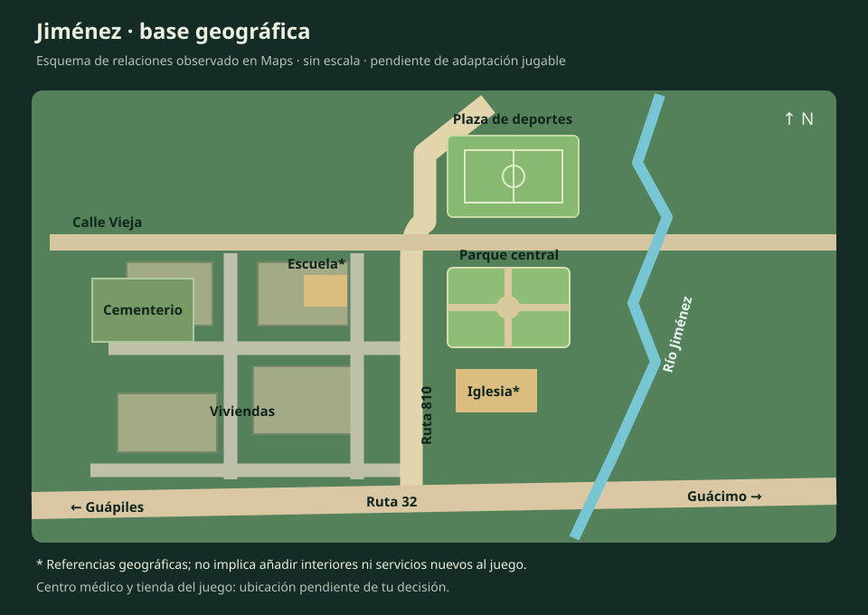

Base de distribución para adaptar a pixel art. Conserva relaciones y orientación; las distancias y formas están simplificadas. Los edificios y servicios finales requieren tu aprobación.
Ver Jiménez en Google Maps · Propuesta anterior, pendiente de sustituir